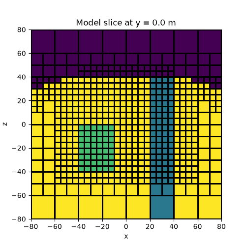
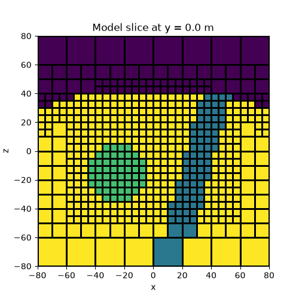
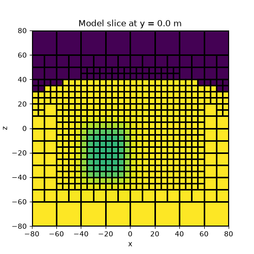
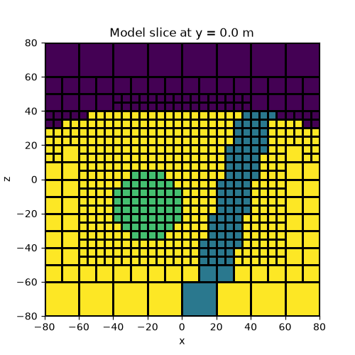

Note
Go to the end to download the full example code.
Tree Meshes#
Here we demonstrate various ways that models can be defined and mapped to OcTree meshes. Some things we consider are:
Mesh refinement near surface topography
Adding structures of various shape to the model
Parameterized models
Models with 2 or more physical properties
Import modules#
from discretize import TreeMesh
from discretize.utils import refine_tree_xyz, active_from_xyz
from simpeg.utils import mkvc, model_builder
from simpeg import maps
import numpy as np
import matplotlib.pyplot as plt
# sphinx_gallery_thumbnail_number = 3
Defining the mesh#
Here, we create the OcTree mesh that will be used for all examples.
def make_example_mesh():
# Base mesh parameters
dh = 5.0 # base cell size
nbc = 32 # total width of mesh in terms of number of base mesh cells
h = dh * np.ones(nbc)
mesh = TreeMesh([h, h, h], x0="CCC")
# Refine to largest possible cell size
mesh.refine(3, finalize=False)
return mesh
def refine_topography(mesh):
# Define topography and refine
[xx, yy] = np.meshgrid(mesh.nodes_x, mesh.nodes_y)
zz = -3 * np.exp((xx**2 + yy**2) / 60**2) + 45.0
topo = np.c_[mkvc(xx), mkvc(yy), mkvc(zz)]
mesh = refine_tree_xyz(
mesh, topo, octree_levels=[3, 2], method="surface", finalize=False
)
return mesh
def refine_box(mesh):
# Refine for sphere
xp, yp, zp = np.meshgrid([-55.0, 50.0], [-50.0, 50.0], [-40.0, 20.0])
xyz = np.c_[mkvc(xp), mkvc(yp), mkvc(zp)]
mesh = refine_tree_xyz(mesh, xyz, octree_levels=[2], method="box", finalize=False)
return mesh
Topography, a block and a vertical dyke#
In this example we create a model containing a block and a vertical dyke that strikes along the y direction. The utility active_from_xyz is used to find the cells which lie below a set of xyz points defining a surface. The model consists of all cells which lie below the surface.
mesh = make_example_mesh()
mesh = refine_topography(mesh)
mesh = refine_box(mesh)
mesh.finalize()
background_value = 100.0
dyke_value = 40.0
block_value = 70.0
# Define surface topography as an (N, 3) np.array. You could also load a file
# containing the xyz points
[xx, yy] = np.meshgrid(mesh.nodes_x, mesh.nodes_y)
zz = -3 * np.exp((xx**2 + yy**2) / 60**2) + 45.0
topo = np.c_[mkvc(xx), mkvc(yy), mkvc(zz)]
# Find cells below topography and define mapping
air_value = 0.0
ind_active = active_from_xyz(mesh, topo)
model_map = maps.InjectActiveCells(mesh, ind_active, air_value)
# Define the model on subsurface cells
model = background_value * np.ones(ind_active.sum())
ind_dyke = (mesh.gridCC[ind_active, 0] > 20.0) & (mesh.gridCC[ind_active, 0] < 40.0)
model[ind_dyke] = dyke_value
ind_block = (
(mesh.gridCC[ind_active, 0] > -40.0)
& (mesh.gridCC[ind_active, 0] < -10.0)
& (mesh.gridCC[ind_active, 1] > -30.0)
& (mesh.gridCC[ind_active, 1] < 30.0)
& (mesh.gridCC[ind_active, 2] > -40.0)
& (mesh.gridCC[ind_active, 2] < 0.0)
)
model[ind_block] = block_value
# We can plot a slice of the model at Y=-2.5
fig = plt.figure(figsize=(5, 5))
ax = fig.add_subplot(111)
ind_slice = int(mesh.h[1].size / 2)
mesh.plot_slice(model_map * model, normal="Y", ax=ax, ind=ind_slice, grid=True)
ax.set_title(
"Model slice at y = {} m".format(mesh.x0[1] + np.sum(mesh.h[1][0:ind_slice]))
)
plt.show()

/home/vsts/work/1/s/tutorials/01-models_mapping/plot_3_tree_models.py:45: FutureWarning: In discretize v1.0 the TreeMesh will change the default value of diagonal_balance to True, which will likely slightly change meshes you have previously created. If you need to keep the current behavior, explicitly set diagonal_balance=False.
mesh = TreeMesh([h, h, h], x0="CCC")
/home/vsts/work/1/s/tutorials/01-models_mapping/plot_3_tree_models.py:59: DeprecationWarning: The surface option is deprecated as of `0.9.0` please update your code to use the `TreeMesh.refine_surface` functionality. It will be removed in a future version of discretize.
mesh = refine_tree_xyz(
/home/vsts/work/1/s/tutorials/01-models_mapping/plot_3_tree_models.py:71: DeprecationWarning: The box option is deprecated as of `0.9.0` please update your code to use the `TreeMesh.refine_bounding_box` functionality. It will be removed in a future version of discretize.
mesh = refine_tree_xyz(mesh, xyz, octree_levels=[2], method="box", finalize=False)
Combo Maps#
Here we demonstrate how combo maps can be used to create a single mapping from the model to the mesh. In this case, our model consists of log-conductivity values but we want to plot the resistivity. To accomplish this we must take the exponent of our model values, then take the reciprocal, then map from below surface cell to the mesh.
mesh = make_example_mesh()
mesh = refine_topography(mesh)
mesh = refine_box(mesh)
mesh.finalize()
background_value = np.log(1.0 / 100.0)
dyke_value = np.log(1.0 / 40.0)
block_value = np.log(1.0 / 70.0)
# Define surface topography
[xx, yy] = np.meshgrid(mesh.nodes_x, mesh.nodes_y)
zz = -3 * np.exp((xx**2 + yy**2) / 60**2) + 45.0
topo = np.c_[mkvc(xx), mkvc(yy), mkvc(zz)]
# Find cells below topography
air_value = 0.0
ind_active = active_from_xyz(mesh, topo)
active_map = maps.InjectActiveCells(mesh, ind_active, air_value)
# Define the model on subsurface cells
model = background_value * np.ones(ind_active.sum())
ind_dyke = (mesh.gridCC[ind_active, 0] > 20.0) & (mesh.gridCC[ind_active, 0] < 40.0)
model[ind_dyke] = dyke_value
ind_block = (
(mesh.gridCC[ind_active, 0] > -40.0)
& (mesh.gridCC[ind_active, 0] < -10.0)
& (mesh.gridCC[ind_active, 1] > -30.0)
& (mesh.gridCC[ind_active, 1] < 30.0)
& (mesh.gridCC[ind_active, 2] > -40.0)
& (mesh.gridCC[ind_active, 2] < 0.0)
)
model[ind_block] = block_value
# Define a single mapping from model to mesh
exponential_map = maps.ExpMap()
reciprocal_map = maps.ReciprocalMap()
model_map = active_map * reciprocal_map * exponential_map
# Plot
fig = plt.figure(figsize=(5, 5))
ax = fig.add_subplot(111)
ind_slice = int(mesh.h[1].size / 2)
mesh.plot_slice(model_map * model, normal="Y", ax=ax, ind=ind_slice, grid=True)
ax.set_title(
"Model slice at y = {} m".format(mesh.x0[1] + np.sum(mesh.h[1][0:ind_slice]))
)
plt.show()

Models with arbitrary shapes#
Here we show how model building utilities are used to make more complicated structural models. The process of adding a new unit is twofold: 1) we must find the indicies for mesh cells that lie within the new unit, 2) we replace the prexisting physical property value for those cells.
mesh = make_example_mesh()
mesh = refine_topography(mesh)
mesh = refine_box(mesh)
mesh.finalize()
background_value = 100.0
dyke_value = 40.0
sphere_value = 70.0
# Define surface topography
[xx, yy] = np.meshgrid(mesh.nodes_x, mesh.nodes_y)
zz = -3 * np.exp((xx**2 + yy**2) / 60**2) + 45.0
topo = np.c_[mkvc(xx), mkvc(yy), mkvc(zz)]
# Set active cells and define unit values
air_value = 0.0
ind_active = active_from_xyz(mesh, topo)
model_map = maps.InjectActiveCells(mesh, ind_active, air_value)
# Define model for cells under the surface topography
model = background_value * np.ones(ind_active.sum())
# Add a sphere
ind_sphere = model_builder.get_indices_sphere(
np.r_[-25.0, 0.0, -15.0], 20.0, mesh.gridCC
)
ind_sphere = ind_sphere[ind_active] # So same size and order as model
model[ind_sphere] = sphere_value
# Add dyke defined by a set of points
xp = np.kron(np.ones((2)), [-10.0, 10.0, 55.0, 35.0])
yp = np.kron([-1000.0, 1000.0], np.ones((4)))
zp = np.kron(np.ones((2)), [-120.0, -120.0, 45.0, 45.0])
xyz_pts = np.c_[mkvc(xp), mkvc(yp), mkvc(zp)]
ind_polygon = model_builder.get_indices_polygon(mesh, xyz_pts)
ind_polygon = ind_polygon[ind_active] # So same size and order as model
model[ind_polygon] = dyke_value
# Plot
fig = plt.figure(figsize=(5, 5))
ax = fig.add_subplot(111)
ind_slice = int(mesh.h[1].size / 2)
mesh.plot_slice(model_map * model, normal="Y", ax=ax, ind=ind_slice, grid=True)
ax.set_title(
"Model slice at y = {} m".format(mesh.x0[1] + np.sum(mesh.h[1][0:ind_slice]))
)
plt.show()

Parameterized block model#
Instead of defining a model value for each sub-surface cell, we can define the model in terms of a small number of parameters. Here we parameterize the model as a block in a half-space. We then create a mapping which projects this model onto the mesh.
mesh = make_example_mesh()
mesh = refine_topography(mesh)
mesh = refine_box(mesh)
mesh.finalize()
background_value = 100.0 # background value
block_value = 40.0 # block value
xc, yc, zc = -20.0, 0.0, -20.0 # center of block
dx, dy, dz = 25.0, 40.0, 30.0 # dimensions in x,y,z
# Define surface topography
[xx, yy] = np.meshgrid(mesh.nodes_x, mesh.nodes_y)
zz = -3 * np.exp((xx**2 + yy**2) / 60**2) + 45.0
topo = np.c_[mkvc(xx), mkvc(yy), mkvc(zz)]
# Set active cells and define unit values
air_value = 0.0
ind_active = active_from_xyz(mesh, topo)
active_map = maps.InjectActiveCells(mesh, ind_active, air_value)
# Define the model on subsurface cells
model = np.r_[background_value, block_value, xc, dx, yc, dy, zc, dz]
parametric_map = maps.ParametricBlock(
mesh, active_cells=ind_active, epsilon=1e-10, p=5.0
)
# Define a single mapping from model to mesh
model_map = active_map * parametric_map
# Plot
fig = plt.figure(figsize=(5, 5))
ax = fig.add_subplot(111)
ind_slice = int(mesh.h[1].size / 2)
mesh.plot_slice(model_map * model, normal="Y", ax=ax, ind=ind_slice, grid=True)
ax.set_title(
"Model slice at y = {} m".format(mesh.x0[1] + np.sum(mesh.h[1][0:ind_slice]))
)
plt.show()

Using Wire Maps#
Wire maps are needed when the model is comprised of two or more parameter types (e.g. conductivity and magnetic permeability). Because the model vector contains all values for all parameter types, we need to use “wires” to extract the values for a particular parameter type.
Here we will define a model consisting of log-conductivity values and magnetic permeability values. We wish to plot the conductivity and permeability on the mesh. Wires are used to keep track of the mapping between the model vector and a particular physical property type.
mesh = make_example_mesh()
mesh = refine_topography(mesh)
mesh = refine_box(mesh)
mesh.finalize()
background_sigma_value = np.log(100.0)
sphere_sigma_value = np.log(70.0)
dyke_sigma_value = np.log(40.0)
background_mu_value = 1.0
sphere_mu_value = 1.25
# Define surface topography
[xx, yy] = np.meshgrid(mesh.nodes_x, mesh.nodes_y)
zz = -3 * np.exp((xx**2 + yy**2) / 60**2) + 45.0
topo = np.c_[mkvc(xx), mkvc(yy), mkvc(zz)]
# Set active cells
air_value = 0.0
ind_active = active_from_xyz(mesh, topo)
active_map = maps.InjectActiveCells(mesh, ind_active, air_value)
# Define model for cells under the surface topography
N = int(ind_active.sum())
model = np.kron(np.ones((N, 1)), np.c_[background_sigma_value, background_mu_value])
# Add a conductive and permeable sphere
ind_sphere = model_builder.get_indices_sphere(
np.r_[-20.0, 0.0, -15.0], 20.0, mesh.gridCC
)
ind_sphere = ind_sphere[ind_active] # So same size and order as model
model[ind_sphere, :] = np.c_[sphere_sigma_value, sphere_mu_value]
# Add a conductive and non-permeable dyke
xp = np.kron(np.ones((2)), [-10.0, 10.0, 55.0, 35.0])
yp = np.kron([-1000.0, 1000.0], np.ones((4)))
zp = np.kron(np.ones((2)), [-120.0, -120.0, 45.0, 45.0])
xyz_pts = np.c_[mkvc(xp), mkvc(yp), mkvc(zp)]
ind_polygon = model_builder.get_indices_polygon(mesh, xyz_pts)
ind_polygon = ind_polygon[ind_active] # So same size and order as model
model[ind_polygon, 0] = dyke_sigma_value
# Create model vector and wires
model = mkvc(model)
wire_map = maps.Wires(("log_sigma", N), ("mu", N))
# Use combo maps to map from model to mesh
sigma_map = active_map * maps.ExpMap() * wire_map.log_sigma
mu_map = active_map * wire_map.mu
# Plot
fig = plt.figure(figsize=(5, 5))
ax = fig.add_subplot(111)
ind_slice = int(mesh.h[1].size / 2)
mesh.plot_slice(sigma_map * model, normal="Y", ax=ax, ind=ind_slice, grid=True)
ax.set_title(
"Model slice at y = {} m".format(mesh.x0[1] + np.sum(mesh.h[1][0:ind_slice]))
)
plt.show()

Total running time of the script: (0 minutes 5.994 seconds)
Estimated memory usage: 332 MB